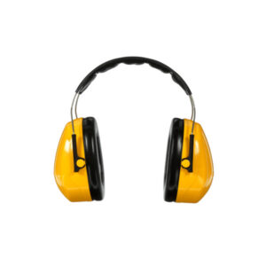

Riesgos Físicos

Uno de los riesgos más comunes es el auditivo, todas las maquinarias que funcionan en el taller de metalmecánica producen un ruido ciertamente desagradable, que al exponerse mucho a él, puede ocasionar daños en el oído.
Solución
Los tapa oidos son la clara solucion para el problema de ruido en el taller, anulan el ruido molesto de las maquinas, para poder consentrarse en la labor y evitar lesiones en los oidos.